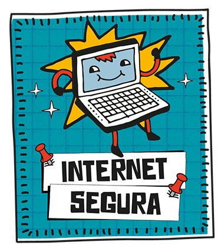

Internet Segura
Internet segura é uma ferramenta que possibilita o aprendizado para pessoas de qualquer faixa etária sobre como utilizar a internet de maneira correta, os perigos presentes nas redes e como evitá-los, manuais de como realizar compras "on-line", além de atividades lúdicas para crianças.

Fato ou Fake
Fato ou Fake, ferramenta criada pela empresa Meedan, é um bot no WhatsApp que permite, por meio da seleção de opções oferecidas pelo "robô"(que por trás está a equipe de jornalismo da Globo), informar ao usuário se a informação é verdadeira ou falsa.